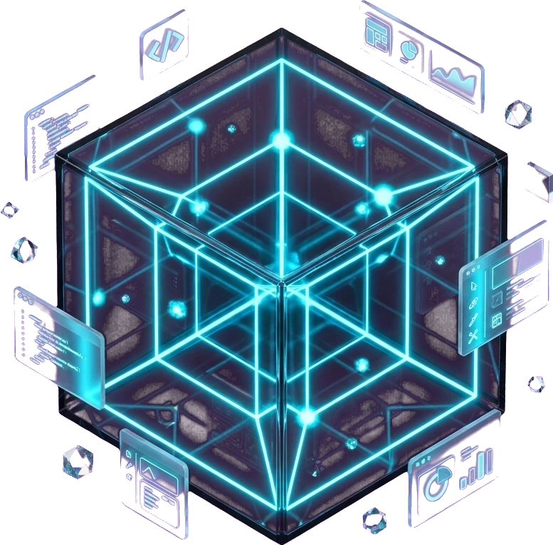

Full-Stack UI/UX Engineering
8+ years bridging high-craft glassmorphic Figma systems with 60FPS React, Three.js, and Rust WebAssembly runtimes.
React 19TypeScriptThree.js / R3F
GLSL ShadersNext.jsFigma Tokens
Full-Stack Creative Technologist & UI/UX Engineer building holographic WebGL dashboards, spatial design systems, and low-latency AI interfaces.

8+ years bridging high-craft glassmorphic Figma systems with 60FPS React, Three.js, and Rust WebAssembly runtimes.
Step 01: Deep architecture discovery, KPI telemetry mapping, and user journey blueprinting.
Direct engineering & UI/UX consulting availability for Q2/Q3.